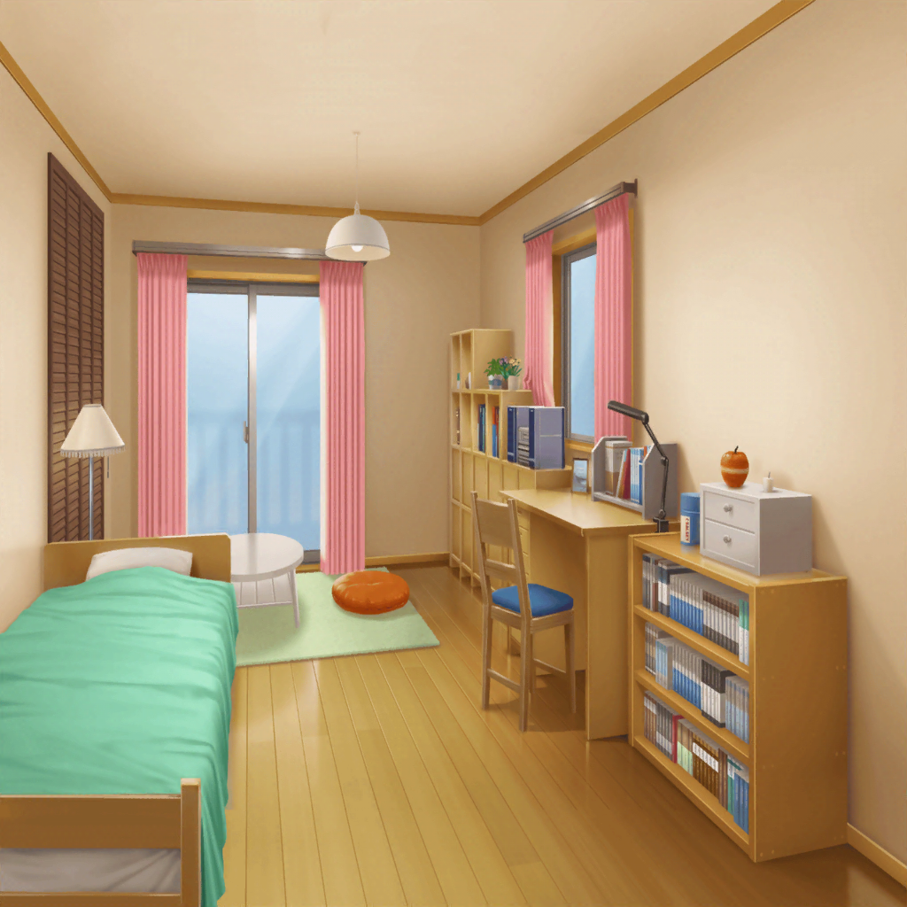

沙綾の部屋
香澄
ごめんね、さーや？
忙しい時に
沙綾
ううん。
全然大丈夫だよ
香澄
よかった～。ちょうどさーやが連絡くれて、本当に助かった！
もし連絡もらってなかったら、
絶対、花火大会に遅刻してたよ！
香澄
で、これが例のブツ
沙綾
ふふっ。例のブツって、変な言い方しないでよ～。
ただの浴衣でしょ？
香澄
えへへ、なんとなく言いたくなっちゃったっ
香澄
それじゃあ、さーや先生、浴衣の着付けお願いします！
もう自分じゃ、着方が全くわからなくて……
なんかね、何度着ても座敷わらしみたいになっちゃうんだ
沙綾
ふふっ、座敷わらしって……けど、すごく想像できるかも！
香澄
こないだ、おたえも言ってたけど、
やっぱり花火って言ったら浴衣でしょ？
香澄
だから、絶対に浴衣着ていきたくて、
お母さんにお店で選んでもらったんだけど……
香澄
まさか、こんなに着るのが難しいとは思わなかったよ……
沙綾
たしかに慣れないと、ちょっと難しいかもね
香澄
でも、さーやは自分でできるんでしょ？
どこで覚えたの！？ 私も、覚えたいっ！
沙綾
私は、妹に浴衣を着せてあげたくて、
ちょっとだけ着付け教室に通ってたんだ
香澄
教室行ってたんだ……
それじゃあ、ほとんど……プロだね！
沙綾
そ、そんなに期待しないでよっ。
ホントにちょっとだけ習っただけだから……
香澄
さーや先生、改め……さーやプロ！
どうやったらいいのか、教えて～！
沙綾
ふふ……はいはい、わかりました。
それじゃあ、一緒に着てみようか？
私の真似をしてみてね
香澄
お願いしますっ！
沙綾
そしたらまずは、背筋をピンとまっすぐ立てて
香澄
こう？
沙綾
足はそんなに開かないでいいよ。
だいたい、肩幅よりちょっと狭いくらいね
香澄
これ……くらいかな？
沙綾
うん、いい感じ。
で、そうしたら、浴衣の袖に腕を通すでしょ？
香澄
え、えっと、
こう、だよね……？
沙綾
背筋はピンとしたままね。
で、そうしたら……
香澄
だ、ダメだっ。
自分でやったら、なんかしわくちゃになっちゃった……
沙綾
途中まで、うまくいってたのにね
香澄
ご、ごめんね、さーや。
なんか、途中で集中力切れちゃった……
沙綾
最初は仕方ないよ。
浴衣って、意外と着る時やることが多いからね
香澄
でもでも、さーやは１回も止まらないで、
着られてたよね。
ホントすごい！
香澄
なんか、さっすがさーやって感じ！
浴衣姿もとっても似合ってるし！
沙綾
そ、そう？
ふふ、ありがとう♪
香澄
いいな、いいな～。
私もそんなふうに着こなしたいな～
沙綾
わかった。
じゃあ、私が着付けてあげるね
香澄
ホントに？
やったー！

沙綾
それじゃあ、帯を巻くね……えい！
香澄
ふぎゅっ！
ぐ、ぐるしい……
沙綾
これで浴衣は、だいたいオッケーかな？
沙綾
ほい、これで完成！
鏡、見てごらん
香澄
わっ、わわわ！？
すっごくいい！
これだよ、私が目指してたものは……！
沙綾
やっぱり浴衣を着ると、
雰囲気が全然変わるね
香澄
自分でやって座敷わらしができあがった時は、
どうしようかと思ったけど……
えへへ、さーやに頼んでよかった～
沙綾
私は座敷わらしの香澄も、ちょっと見てみたかったけど……
香澄
わーい、わーい！ なんか、テンション上がってきちゃった～。
ホントにありがとう、さーや！
今日は花火大会、いっぱい楽しもうね！
沙綾
うん！
香澄
それじゃあ、花火大会にいざしゅっぱ～つ！